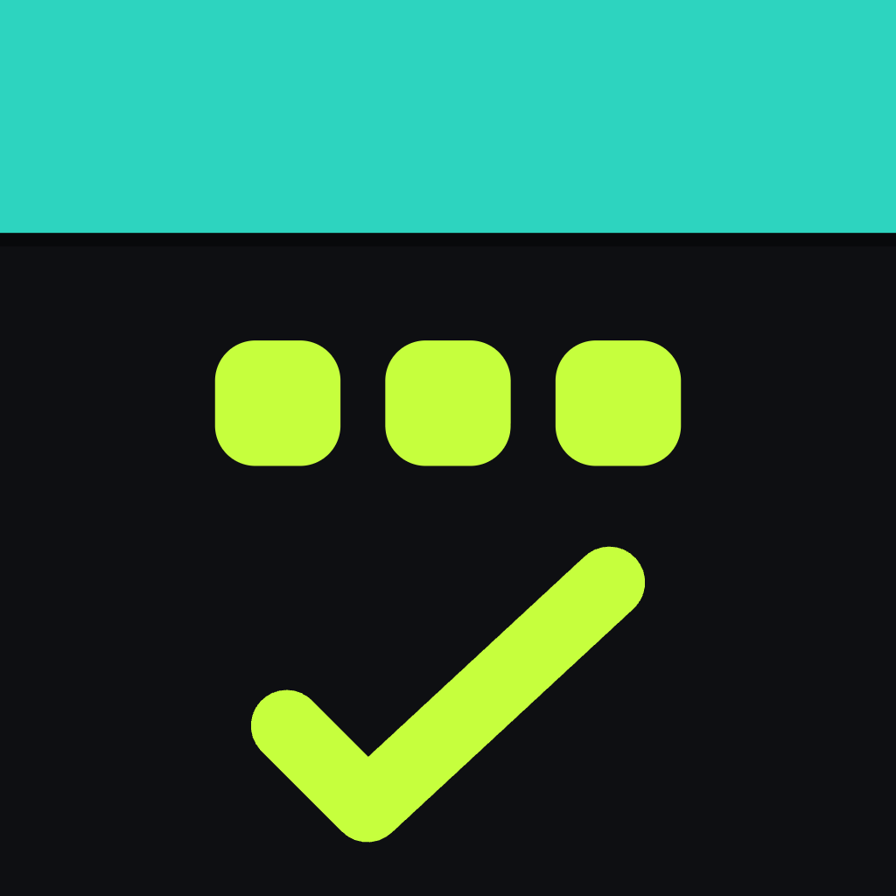
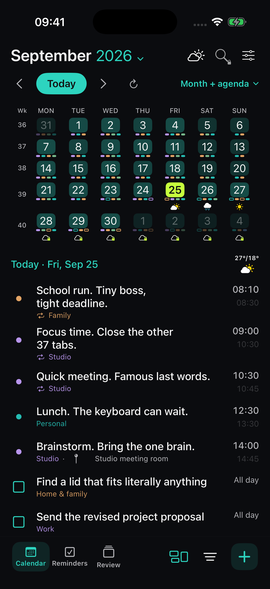
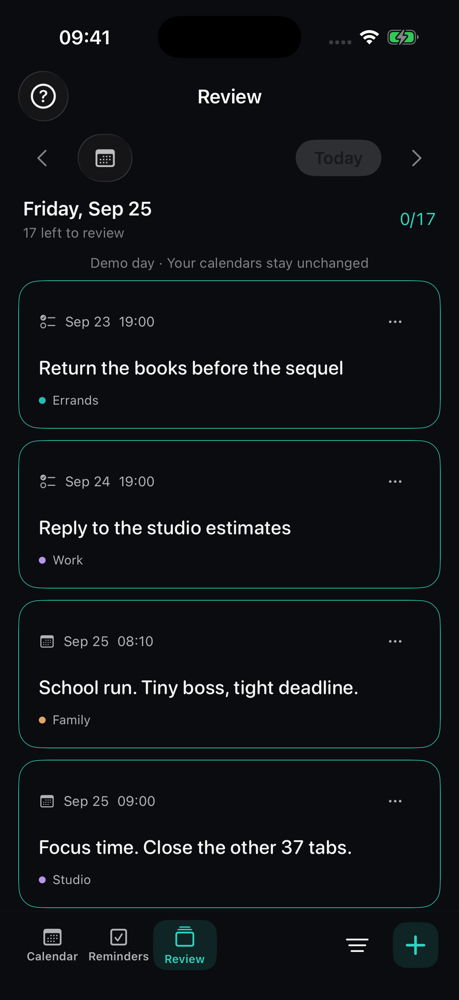

The big picture.
And the next little thing.
Browse your months, find your week, or get right down to the hour. Your calendar should fit the plan, not the other way around.

cality.Get CalityCALENDAR & REMINDERS FOR YOUR APPLE DEVICES
Your calendar, reminders and whatever life throws in. Together in one beautifully useful app.
Free to start · iPhone · iPad · Mac
For actual life.
Not just the colour-coded version.

01 / YOUR EVERYDAY, TOGETHER
Keep the calendars and Apple Reminders you already use. Give them a shared home, with space for the way you think.
Browse your months, find your week, or get right down to the hour. Your calendar should fit the plan, not the other way around.
Unfinished doesn't have to mean forgotten. Review your items, choose the next step, and give tomorrow a fighting chance.

A SMALL RITUAL. A BETTER TOMORROW.
Give unfinished tasks a next step with Review. Reschedule, follow up, and move forward.
Meet your new daily ritual02 / THE THOUGHTFUL DETAILS
Add plans in everyday language. Natural-language entry understands 20 writing languages. Your thoughts have already been through enough. Spare them the form.
See the forecast alongside your plans. Because “picnic” and “sideways rain” deserve an introduction. Explore more days and richer charts with Pro.
Keep your day close with widgets. On Mac, your calendar is also a click away in the menu bar.
Flexible views, colour choices and optional personality. A little wit when you want it. It's a planner, not your motivational uncle.
03 / START FREE. GO FURTHER IF YOU WANT.
Start free. Your to-do list is demanding enough.
CALITY
CALITY PRO
US App Store prices. Local pricing and taxes may vary. Monthly and annual subscriptions renew unless cancelled. Lifetime is a one-time purchase of current Pro features; future AI add-ons are not included.
04 / GOOD QUESTIONS
The best calendar app is the one that fits your routine. Look for clear views, easy event entry, reminders where you need them, and support for your devices. Cality brings those essentials together with daily Review, weather and flexible views on iPhone, iPad and Mac. Try the free version to see whether it fits your day.
If your ideal reminders app also shows your schedule, Cality is worth trying. It works with Apple Reminders and adds a shared calendar view and a Review workflow for unfinished items. You can keep your existing reminder lists instead of starting again.
That depends on how you plan. Cality is designed for people who want their Apple calendar events and reminders in one place, with flexible views and a clear next step for unfinished tasks. Start free and judge it on your own routine.
No. Cality uses the calendars available through Apple's calendar system and your Apple Reminders, with your permission. Availability depends on the accounts and permissions configured on your device.
Yes. Cality is available for iPhone, iPad and Mac, with layouts suited to each device. Your calendar and reminder accounts handle their own syncing.
Yes. Download Cality free and use its core calendar and reminders features. Optional Pro adds search, creating recurring items, multiple alerts, more appearance choices and extended weather.
Cality is made by Roger at Wystone, the independent studio behind MarkSave and Stickly. One builder, a lot of tabs, and a firm belief that getting organised shouldn't feel like a second job.
MEET YOUR NEXT EVERYDAY APP
iPhone, iPad and Mac. Free to start.